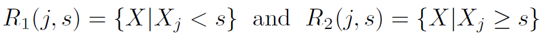
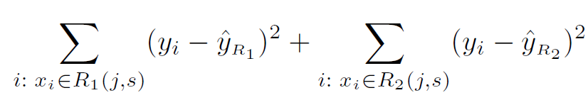
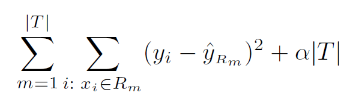
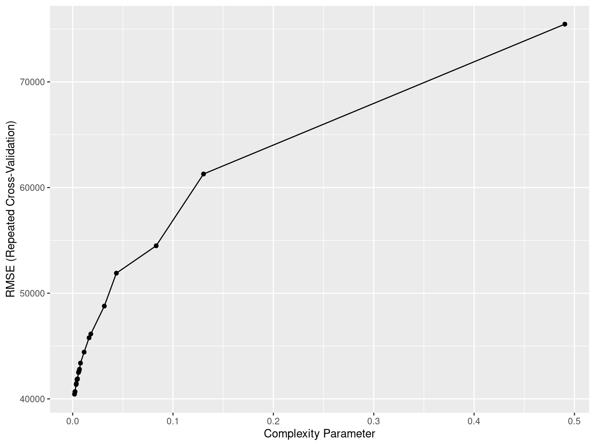
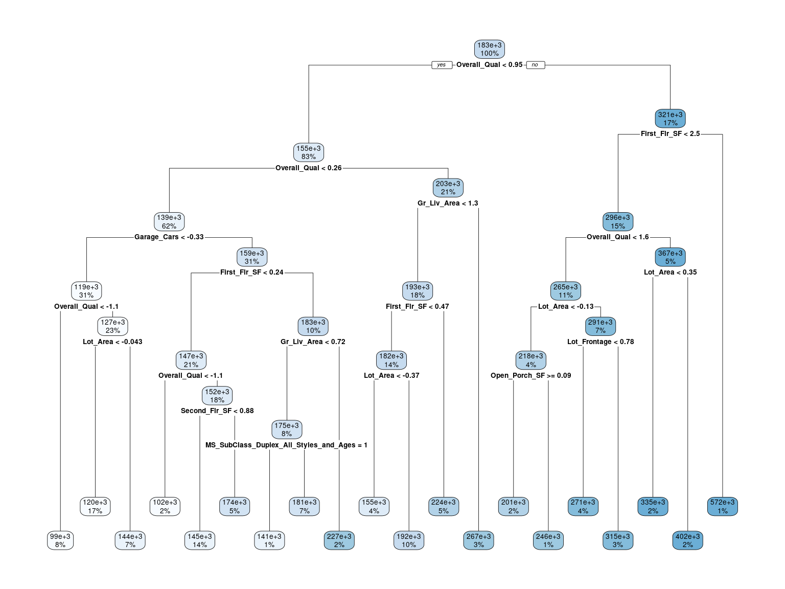
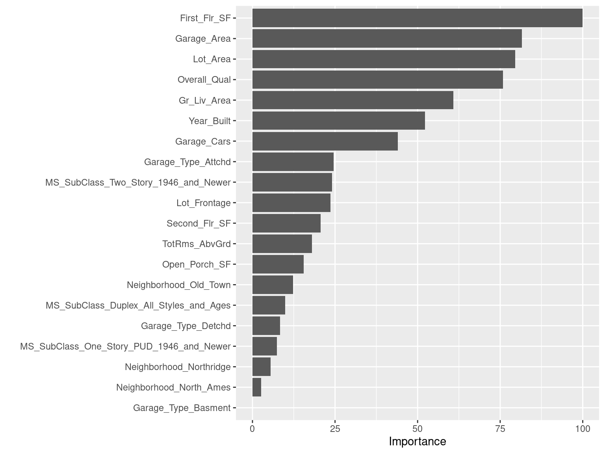
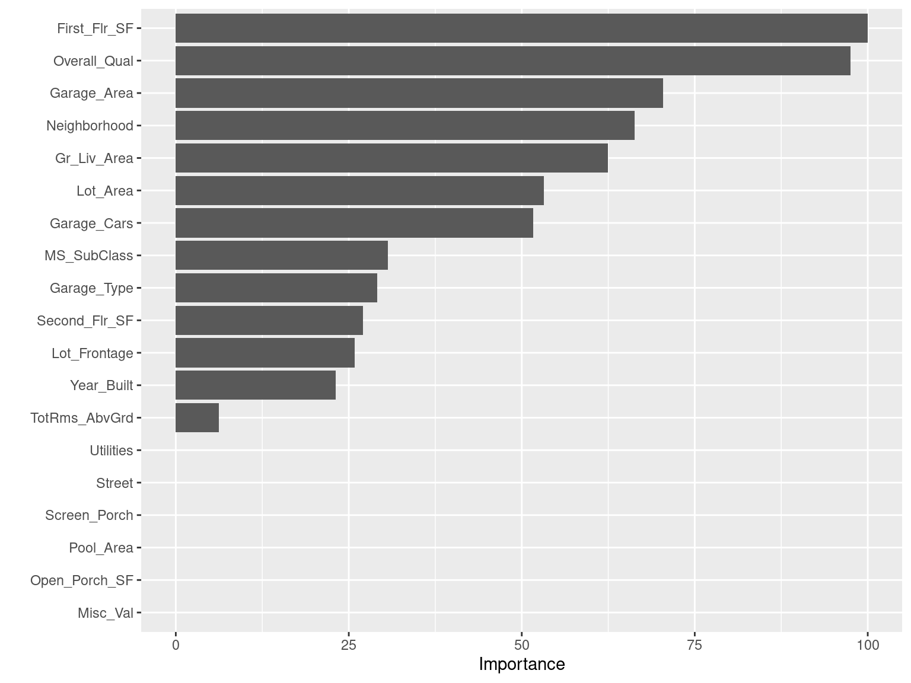
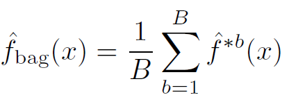

Chapter 8 Tree-Based Methods
Involves stratifying or segmenting the predictor space into a number of simple regions.
The set of splitting rules used to segment the predictor space can be summarized in a tree, thus, the name decision tree methods.
Can be used for both classification and regression.
Tree-based methods are simple and useful for interpretation, however, not the best in terms of prediction accuracy.
Methods such as bagging, random forests, and boosting grow multiple trees and then combine their results.
8.1 Terminology for Trees
Every split is considered to be a node.
We refer to the first node at the top of the tree as the root node (this node contains all of the training data).
The final nodes at the bottom of the tree are called the terminal nodes or leaves.
Decision trees are typically drawn upside down, in the sense that the leaves are at the bottom of the tree.
The points along the tree where the predictor space is split are referred to as internal nodes, that is, every node in between the root node and terminal nodes is referred to as an internal node.
The segments of the trees that connect the nodes are known as branches.
8.3 Building a Tree and Prediction
The steps involved are:
Dividing the predictor space, that is, the set of possible values for \(X_1, X_2, \ldots, X_p\) into \(J\) distinct and non-overlapping regions, \(R_1, R_2, \ldots, R_J\).
For every observation that falls into the region \(R_j\), make the same prediction, which is
the mean response of the training set observations in \(R_j\) (for regression problems),
majority vote response of the training set observations in \(R_j\) (for classification problems).
8.8 Building a Tree
It is computationally infeasible to consider every possible partition of the feature space into \(J\) boxes.
For this reason, we take a top-down, greedy approach known as recursive binary splitting.
- top-down because it begins at the top of the tree and then successively splits the predictor space.
- greedy because at each step of the tree-building process, the best split is made at that particular step, rather than looking ahead and picking a split that will lead to a better tree in some future step.
8.9 Building a Tree
- First select the predictor \(X_j\) and the cutpoint \(s\) such that splitting the predictor space into the regions \(\{X|X_j < s\}\) and \(\{X|X_j \ge s\}\) leads to the greatest possible reduction in RSS.
For any \(j\) and \(s\), define

Find \(j\) and \(s\) that minimize

Next, repeat the process, look for the best predictor and best cutpoint in order to split the data further. However, this time, instead of splitting the entire predictor space, split one of the two previously identified regions.
The process continues until a stopping criterion is reached; say, we may continue until no region contains more than five observations.
8.10 Tree Pruning
The process described above may overfit the data.
A smaller tree with fewer splits (that is, fewer regions \(R_1,\ldots,R_J\)) might lead to lower variance and better interpretation at the cost of a little bias.
One possible alternative is to grow the tree only so long as the decrease in the \(RSS\) due to each split exceeds some (high) threshold.
This strategy will result in smaller trees, but is too short-sighted: a seemingly worthless split early on in the tree might be followed by a very good split, that is, a split that leads to a large reduction in \(RSS\) later on.
8.11 Tree Pruning
A better strategy is pruning.
Grow a very large tree \(T_0\), and then prune it back to obtain a subtree.
The technique uses is known as cost complexity pruning (also known as weakest link pruning).
Consider a sequence of trees indexed by \(\alpha\). For each \(\alpha\), consider the tree \(T \subset T_0\) that minimizes

- Choose optimal \(\alpha\) by CV.
8.13 Regression Tree: Implementation
Ames Housing Dataset
ames <- readRDS("AmesHousing.rds") # load dataset
ames$Overall_Qual <- factor(ames$Overall_Qual, levels = c("Very_Poor", "Poor", "Fair", "Below_Average",
"Average", "Above_Average", "Good", "Very_Good",
"Excellent", "Very_Excellent"))# split data
set.seed(022123) # set seed
index <- createDataPartition(y = ames$Sale_Price, p = 0.7, list = FALSE) # consider 70-30 split
ames_train <- ames[index,] # training data
ames_test <- ames[-index,] # test data8.14 Regression Tree: Implementation
Ames Housing Dataset
# create recipe and blueprint, prepare and apply blueprint
set.seed(022123) # set seed
ames_recipe <- recipe(Sale_Price ~ ., data = ames_train) # set up recipe
blueprint <- ames_recipe %>%
step_nzv(Street, Utilities, Pool_Area, Screen_Porch, Misc_Val) %>% # filter out zv/nzv predictors
step_impute_mean(Gr_Liv_Area) %>% # impute missing entries
step_integer(Overall_Qual) %>% # numeric conversion of levels of the predictors
step_center(all_numeric(), -all_outcomes()) %>% # center (subtract mean) all numeric predictors
step_scale(all_numeric(), -all_outcomes()) %>% # scale (divide by standard deviation) all numeric predictors
step_other(Neighborhood, threshold = 0.01, other = "other") %>% # lumping required predictors
step_dummy(all_nominal(), one_hot = TRUE) # one-hot/dummy encode nominal categorical predictors
prepare <- prep(blueprint, data = ames_train) # estimate feature engineering parameters based on training data
baked_train <- bake(prepare, new_data = ames_train) # apply the blueprint to training data for building final/optimal model
baked_test <- bake(prepare, new_data = ames_test) # apply the blueprint to test data for future use8.15 Regression Tree: Implementation
Ames Housing Dataset
Implement CV to tune the hyperparameter.
set.seed(022123) # set seed
cv_specs <- trainControl(method = "repeatedcv", number = 5, repeats = 5) # CV specifications
library(rpart)
tree_cv <- train(blueprint,
data = ames_train,
method = "rpart",
trControl = cv_specs,
tuneLength = 20, # considers a grid of 20 possible tuning parameter values
metric = "RMSE")## Warning in train_rec(rec = x, dat = data, info = trainInfo, method = models, :
## There were missing values in resampled performance measures.# results from the CV procedure
tree_cv$bestTune # optimal hyperparameter## cp
## 1 0.00185082min(tree_cv$results$RMSE) # optimal CV RMSE## [1] 40442.788.16 Regression Tree: Implementation
Ames Housing Dataset
Results from the CV procedure.
ggplot(tree_cv) 
8.17 Regression Tree: Implementation
Ames Housing Dataset
# build final model
final_model <- rpart(Sale_Price ~ .,
data = baked_train,
cp = tree_cv$bestTune$cp,
xval = 0, # no further CV
method = "anova") # for regression# obtain predictions and test set RMSE
final_model_preds <- predict(final_model, newdata = baked_test) # obtain test set predictions
sqrt(mean((final_model_preds - baked_test$Sale_Price)^2)) # calculate test set RMSE## [1] 50504.248.18 Regression Tree: Implementation
Ames Housing Dataset
library(rpart.plot)
rpart.plot(final_model) 
8.19 Regression Tree: Implementation
Ames Housing Dataset
# variable importance
vip(object = tree_cv, num_features = 20, method = "model")
8.20 Regression Tree: Implementation
Ames Housing Dataset
# build full grown tree (no pruning)
final_model_no_prune <- rpart(Sale_Price ~ .,
data = baked_train,
cp = 0, # no pruning
xval = 0, # no CV
method = "anova") # for regression# obtain predictions and test set RMSE
final_model_no_prune_preds <- predict(final_model_no_prune, newdata = baked_test) # obtain test set predictions
sqrt(mean((final_model_no_prune_preds - baked_test$Sale_Price)^2)) # calculate test set RMSE## [1] 50106.398.22 Trees
Advantages
Easy to explain.
Closely mirror human decision-making.
Can be displayed graphically, and are easily interpreted by non-experts.
Handle qualitative predictors without creating dummy variables. Does not require standardization of predictors.
Disadvantages
Do not have same level of prediction accuracy.
Can be very non-robust.
8.23 Regression Tree: Implementation
Ames Housing Dataset (minimal feature engineering)
# create recipe and blueprint, prepare and apply blueprint
set.seed(022123) # set seed
ames_recipe <- recipe(Sale_Price ~ ., data = ames_train) # set up recipe
blueprint_new <- ames_recipe %>%
step_impute_mean(Gr_Liv_Area) # impute missing entries
prepare_new <- prep(blueprint_new, data = ames_train) # estimate feature engineering parameters based on training data
baked_train_new <- bake(prepare_new, new_data = ames_train) # apply the blueprint to training data for building final/optimal model
baked_test_new <- bake(prepare_new, new_data = ames_test) # apply the blueprint to test data for future use8.24 Regression Tree: Implementation
Ames Housing Dataset
Implement CV to tune the hyperparameter.
set.seed(022123) # set seed
cv_specs <- trainControl(method = "repeatedcv", number = 5, repeats = 5) # CV specifications
tree_cv_min_fe <- train(blueprint_new,
data = ames_train,
method = "rpart",
trControl = cv_specs,
tuneLength = 20, # considers a grid of 20 possible tuning parameter values
metric = "RMSE")## Warning in train_rec(rec = x, dat = data, info = trainInfo, method = models, :
## There were missing values in resampled performance measures.# results from the CV procedure
tree_cv_min_fe$bestTune # optimal hyperparameter## cp
## 1 0.002515201min(tree_cv_min_fe$results$RMSE) # optimal CV RMSE## [1] 40105.368.25 Regression Tree: Implementation
Ames Housing Dataset
# build final model
final_model_min_fe <- rpart(Sale_Price ~ .,
data = baked_train_new,
cp = tree_cv_min_fe$bestTune$cp,
xval = 0, # no CV
method = "anova") # for regression# obtain predictions and test set RMSE
final_model_min_fe_preds <- predict(final_model_min_fe, newdata = baked_test_new) # obtain test set predictions
sqrt(mean((final_model_min_fe_preds - baked_test_new$Sale_Price)^2)) # calculate test set RMSE## [1] 52063.378.26 Regression Tree: Implementation
Ames Housing Dataset
# variable importance
vip(object = tree_cv_min_fe, num_features = 20, method = "model") 
8.27 Classification Trees
Still use recursive binary splitting to grow a classification tree.
\(RSS\) can be replaced by
- classification error rate, the fraction of the training observations in that region that do not belong to the most common class.
\[E = 1 - \max_k \left(\hat{p}_{mk}\right)\]
- Gini index, a measure of node purity—a small value indicates that a node contains predominantly observations from a single class.
\[G = \displaystyle \sum_{k=1}^{K} \hat{p}_{mk}\left(1-\hat{p}_{mk}\right)\]
Here \(\hat{p}_{mk}\) represents the proportion of training observations in the \(m^{th}\) region that are from the \(k^{th}\) class.
8.28 Your Turn!!!
You will work with the iris dataset which contains measurements in centimeters of four variables for 50 flowers from each of 3 species of iris: setosa, versicolor, and virginica. Please load the dataset using the following code.
data(iris) # load datasetWe are interested in predicting Species using the rest of the variables in the dataset. Compare the performance (in terms of Accuracy) of the following models:
A logistic regression model;
A \(K\)-NN model with optimal \(K\) chosen by CV;
A classification tree with optimal hyperparameter chosen by CV. Use
tuneLength = 20.A classification tree with minimal feature engineering. Use CV to choose the optimal hyperparameter. Use
tuneLength = 20.
Perform the following tasks.
Investigate the dataset and complete any necessary tasks.
Split the data into training and test sets (75-25).
Perform required data preprocessing and create the blueprint. If using
step_dummy(), setone_hot = FALSE. Prepare the blueprint on the training data. Obtain the modified training and test datasets.Implement 10-fold CV repeated 5 times for each of the models above.
Report the optimal CV Accuracy of each model. Report the optimal hyperparameters for each model. Which model performs best in this situation?
Build the final model. Obtain class label predictions on the test set. Create the corresponding confusion matrix and report the test set accuracy. Based on your optimal final model, consult the help page for either
predict.knn3orpredict.rpartfunctions.
8.29 Your Turn!!!
glimpse(iris) # all features are numerical## Rows: 150
## Columns: 5
## $ Sepal.Length <dbl> 5.1, 4.9, 4.7, 4.6, 5.0, 5.4, 4.6, 5.0, 4.4, 4.9, 5.4, 4.…
## $ Sepal.Width <dbl> 3.5, 3.0, 3.2, 3.1, 3.6, 3.9, 3.4, 3.4, 2.9, 3.1, 3.7, 3.…
## $ Petal.Length <dbl> 1.4, 1.4, 1.3, 1.5, 1.4, 1.7, 1.4, 1.5, 1.4, 1.5, 1.5, 1.…
## $ Petal.Width <dbl> 0.2, 0.2, 0.2, 0.2, 0.2, 0.4, 0.3, 0.2, 0.2, 0.1, 0.2, 0.…
## $ Species <fct> setosa, setosa, setosa, setosa, setosa, setosa, setosa, s…summary(iris) # summary of variables## Sepal.Length Sepal.Width Petal.Length Petal.Width
## Min. :4.300 Min. :2.000 Min. :1.000 Min. :0.100
## 1st Qu.:5.100 1st Qu.:2.800 1st Qu.:1.600 1st Qu.:0.300
## Median :5.800 Median :3.000 Median :4.350 Median :1.300
## Mean :5.843 Mean :3.057 Mean :3.758 Mean :1.199
## 3rd Qu.:6.400 3rd Qu.:3.300 3rd Qu.:5.100 3rd Qu.:1.800
## Max. :7.900 Max. :4.400 Max. :6.900 Max. :2.500
## Species
## setosa :50
## versicolor:50
## virginica :50
##
##
## sum(is.na(iris)) # no missing entries## [1] 08.30 Your Turn!!!
set.seed(022123) # set seed
# split the data into training and test sets
index <- createDataPartition(iris$Species, p = 0.75, list = FALSE)
iris_train <- iris[index, ]
iris_test <- iris[-index, ]nearZeroVar(iris_train, saveMetrics = TRUE) # no zv/nzv features## freqRatio percentUnique zeroVar nzv
## Sepal.Length 1.000000 27.192982 FALSE FALSE
## Sepal.Width 2.090909 17.543860 FALSE FALSE
## Petal.Length 1.250000 35.964912 FALSE FALSE
## Petal.Width 2.300000 19.298246 FALSE FALSE
## Species 1.000000 2.631579 FALSE FALSE8.31 Your Turn!!!
set.seed(022123) # set seed
# create recipe and blueprint, prepare and apply blueprint
blueprint <- recipe(Species ~ ., data = iris_train) %>%
step_normalize(all_predictors())
prepare <- prep(blueprint, training = iris_train)
baked_train <- bake(prepare, new_data = iris_train)
baked_test <- bake(prepare, new_data = iris_test)8.32 Your Turn!!!
set.seed(022123) # set seed
cv_specs <- trainControl(method = "repeatedcv", number = 10, repeats = 5) # CV specificationslogistic_cv <- train(blueprint,
data = iris_train,
method = "glm",
family = "binomial",
trControl = cv_specs,
metric = "Accuracy")
# The code above will throw an error since this is a 3-class classification problem and
# logistic regression (with family = binomial) works for a binary (2-class) problem.8.33 Your Turn!!!
set.seed(022123) # set seed
# CV for KNN
k_grid <- expand.grid(k = seq(1, 101, by = 10))
knn_cv <- train(blueprint,
data = iris_train,
method = "knn",
trControl = cv_specs,
tuneGrid = k_grid,
metric = "Accuracy")set.seed(022123) # set seed
# CV with tree
tree_cv <- train(blueprint,
data = iris_train,
method = "rpart",
trControl = cv_specs,
tuneLength = 20,
metric = "Accuracy")8.34 Your Turn!!!
set.seed(022123) # set seed
# CV with tree (minimal feature engineering, no engineering in this case)
tree_cv_min_fe <- train(Species ~ .,
data = iris_train,
method = "rpart",
trControl = cv_specs,
tuneLength = 20,
metric = "Accuracy")8.35 Your Turn!!!
# optimal CV Accuracies
max(knn_cv$results$Accuracy) # for KNN## [1] 0.9688788max(tree_cv$results$Accuracy) # for classification tree## [1] 0.9353636max(tree_cv_min_fe$results$Accuracy) # for classification tree with minimal feature engineering## [1] 0.9353636# optimal hyperparameters
knn_cv$bestTune$k # for KNN## [1] 11tree_cv$bestTune$cp # for classification tree## [1] 0.4210526tree_cv_min_fe$bestTune$cp # for classification tree with minimal feature engineering## [1] 0.42105268.36 Your Turn!!!
# final model
final_model <- knn3(Species ~ ., data = baked_train, k = knn_cv$bestTune$k)# obtain probability and class label predictions
final_model_prob_preds <- predict(final_model, newdata = baked_test, type = "prob") # probability predictions
final_model_class_preds <- predict(final_model, newdata = baked_test, type = "class") # class label predictions
confusionMatrix(data = final_model_class_preds, reference = baked_test$Species)## Confusion Matrix and Statistics
##
## Reference
## Prediction setosa versicolor virginica
## setosa 12 0 0
## versicolor 0 11 1
## virginica 0 1 11
##
## Overall Statistics
##
## Accuracy : 0.9444
## 95% CI : (0.8134, 0.9932)
## No Information Rate : 0.3333
## P-Value [Acc > NIR] : 1.728e-14
##
## Kappa : 0.9167
##
## Mcnemar's Test P-Value : NA
##
## Statistics by Class:
##
## Class: setosa Class: versicolor Class: virginica
## Sensitivity 1.0000 0.9167 0.9167
## Specificity 1.0000 0.9583 0.9583
## Pos Pred Value 1.0000 0.9167 0.9167
## Neg Pred Value 1.0000 0.9583 0.9583
## Prevalence 0.3333 0.3333 0.3333
## Detection Rate 0.3333 0.3056 0.3056
## Detection Prevalence 0.3333 0.3333 0.3333
## Balanced Accuracy 1.0000 0.9375 0.93758.37 Ensemble Methods
Single regression or classification trees usually have poor predictive performance.
Ensemble Methods use a collection of multiple trees to improve the predictive performance at the cost of interpretability.
Bagging
Random Forests
Boosting

Figure 8.4: Adapted from ISLR, James et al.
8.38 Bagging
Bootstrap aggregation or bagging is a general-purpose procedure for reducing the variance of a statistical learning method.
Idea: Build multiple trees and average their results.
Result: Given a set of \(n\) independent observations (random variables) \(Z_1, \ldots, Z_n\), each with variance \(\sigma^2\), the variance of the mean/average \(\bar{Z} = \displaystyle \dfrac{Z_1 + Z_2 + \cdots + Z_n}{n}\) of the observations is \(\sigma^2/n\).
In other words, averaging a set of observations reduces variance.
- In reality, we do not have multiple training datasets.
8.40 Bagging
Take repeated bootstrap samples (say \(B\)) from the original (single) available dataset.
Build a tree on each bootstrap sample and obtain predictions \(\hat{f}^{*b}(x), \ b=1, 2, \ldots, B\).
Average all the predictions.

Individual trees are grown deep and are not pruned. They have high variance, but low bias.
For classification trees, take majority vote: the overall prediction is the most commonly occurring class among the \(B\) predictions.
8.41 Out-of-Bag Error Estimation
A straightforward way to estimate the test error of a bagged model, without performing CV.
It can be shown that on average, each bagged tree (constructed on each bootstrap sample) makes use of around two-thirds of the observations.
Remaining one-third observations not used train a bagged tree are referred to as out-of-bag (OOB) observations.
For \(i^{th}\) observation, use the trees in which that observation was OOB. This will yield around \(B/3\) predictions for the \(i^{th}\) observation. Take their average to obtain a single prediction.
Equivalent to LOOCV if \(B\) is large.
8.42 Variable Importance Measures
Bagging improves prediction accuracy at the expense of interpretability.
However, one can still obtain an overall summary of the importance of each predictor.
To measure feature importance, the reduction in the loss function (e.g., RSS) attributed to each variable at each split is tabulated. In some instances, a single variable could be used multiple times in a tree; consequently, the total reduction in the loss function across all splits by a variable are summed up and used as the total feature importance.
A large value indicates an important predictor.
8.43 Bagging: Implementation
Ames Housing Dataset
Data splitting and feature engineering has been done in the previous slides.
set.seed(022123) # set seed
library(ipred)
bag_fit <- bagging(Sale_Price ~ .,
data = baked_train,
nbagg = 500, # number of trees to grow (bootstrap samples) usually 500
coob = TRUE, # yes to computing OOB error estimate
control = rpart.control(minsplit = 2, # split a node if at least 2 observations present
cp = 0, # no pruning (let the trees grow tall)
xval = 0)) # no CV
bag_fit##
## Bagging regression trees with 500 bootstrap replications
##
## Call: bagging.data.frame(formula = Sale_Price ~ ., data = baked_train,
## nbagg = 500, coob = TRUE, control = rpart.control(minsplit = 2,
## cp = 0, xval = 0))
##
## Out-of-bag estimate of root mean squared error: 28762.968.44 Bagging: Implementation
Ames Housing Dataset
CV with bagging (NOT recommended since computationally expensive)
set.seed(022123) # set seed
cv_specs <- trainControl(method = "repeatedcv", number = 5, repeats = 5) # CV specifications
library(ipred)
library(e1071)
bagging_cv <- train(blueprint,
data = ames_train,
method = "treebag",
trControl = cv_specs,
nbagg = 500,
control = rpart.control(minsplit = 2, cp = 0),
metric = "RMSE")8.45 Bagging: Implementation
# obtain predictions on the test set
final_model_preds <- predict(bag_fit, newdata = baked_test) # use 'type = "class"' for classification trees
sqrt(mean((final_model_preds - baked_test$Sale_Price)^2)) # test set RMSE## [1] 43202.54# variable importance
imp <- varImp(bag_fit) # look at the object created8.46 Bagging: Disadvantages
Bagging improves the prediction accuracy for high variance (and low bias) models at the expense of interpretability and computational speed.
However, although the model building steps are independent, the trees in bagging are not completely independent of each other since all the original features are considered at every split of every tree. Rather, trees from different bootstrap samples typically have similar structure to each other (especially at the top of the tree) due to any underlying strong relationships.
This characteristic is known as tree correlation and prevents bagging from further reducing the variance of the individual models. Random forests extend and improve upon bagged decision trees by reducing this correlation and thereby improving the accuracy of the overall ensemble.
8.47 Bagging: Disadvantages
Tree Correlation in Bagging

Figure 8.6: Adapted from HMLR, Boehmke & Greenwell
8.48 Random Forests
Provide an improvement over bagged trees by reducing the variance further (by decorrelating) when we average the trees.
As in bagging, we build a number of decision trees on bootstrapped training samples.
For each tree, each time a split is considered, a random selection of \(m\) predictors is chosen (split candidates) from the full set of \(p\) predictors. The split is allowed to use only one of those \(m\) predictors. Note that in bagging, each split for each tree considers all \(p\) predictors as split candidates.
A fresh sample of \(m\) predictors is taken at each split. Typical default values are \(m = p/3\) (regression) and \(m = \sqrt{p}\) (classification) but this should be considered a tuning parameter, to be chosen by CV.
8.49 Random Forests: Implementation
Ames Housing Dataset
Data splitting and feature engineering has been done in the previous slides.
set.seed(022123) # set seed
cv_specs <- trainControl(method = "cv", number = 5) # CV specifications
library(ranger)
library(e1071)
param_grid <- expand.grid(mtry = seq(1, 30, 1), # sequence of 1 to at least half the number of predictors
splitrule = "variance", # use "gini" for classification
min.node.size = 2) # for each tree
rf_cv <- train(blueprint,
data = ames_train,
method = "ranger",
trControl = cv_specs,
tuneGrid = param_grid,
metric = "RMSE")
rf_cv$bestTune$mtry # optimal tuning parameter## [1] 28min(rf_cv$results$RMSE) # optimal CV RMSE## [1] 30948.638.50 Random Forests: Implementation
Ames Housing Dataset
# fit final model
final_model <- ranger(Sale_Price ~ .,
data = baked_train,
num.trees = 500,
mtry = rf_cv$bestTune$mtry,
splitrule = "variance",
min.node.size = 2,
importance = "impurity")# obtain predictions on the test set
final_model_preds <- predict(final_model, data = baked_test, type = "response") # predictions on test set
sqrt(mean((final_model_preds$predictions - baked_test$Sale_Price)^2)) # test set RMSE## [1] 36257.258.51 Random Forests: Implementation
Ames Housing Dataset
# variable importance
head(sort(final_model$variable.importance, decreasing = TRUE), 10) # top 10 most important features## Overall_Qual First_Flr_SF Garage_Cars Gr_Liv_Area Year_Built
## 1.794339e+12 6.989855e+11 6.325767e+11 4.106476e+11 3.467222e+11
## Garage_Area Lot_Area Second_Flr_SF Lot_Frontage Open_Porch_SF
## 2.715779e+11 1.557609e+11 1.146867e+11 6.614335e+10 4.534856e+108.52 Your Turn!!!
You will work with the vowels.rds data. The task is to predict letter (five vowels) using the rest of the variables in the data (predictors).
vowels <- readRDS("vowels.rds") # load datasetCompare the performance (in terms of Accuracy) of the following models. Choose the optimal hyperparameters using CV.
A \(K\)-NN classifier
A single classification tree (use
tuneLength = 20)A bagged model
A random forest model
Perform the following tasks.
Investigate the dataset and complete any necessary tasks.
Split the data into training and test sets (70-30).
Perform required data preprocessing and create the blueprint. If using
step_dummy(), setone_hot = FALSE. Prepare the blueprint on the training data. Obtain the modified training and test datasets.Implement 5-fold CV repeated 5 times for each of the models above.
Report the optimal CV (or, OOB) Accuracy of each model. Report the optimal hyperparameters for each model. Which model performs best in this situation?
Build the final model. Obtain class label predictions on the test set. Create the corresponding confusion matrix and report the test set accuracy.
8.53 Your Turn!!!
glimpse(vowels) # all features are numerical## Rows: 1,941
## Columns: 17
## $ letter <fct> I, O, E, E, E, A, E, O, U, I, E, I, U, A, O, E, U, I, A, A, E, …
## $ xbox <int> 5, 3, 3, 3, 6, 3, 4, 4, 7, 2, 3, 3, 4, 2, 5, 1, 3, 2, 2, 8, 3, …
## $ ybox <int> 12, 4, 4, 7, 9, 7, 8, 7, 11, 9, 8, 9, 7, 1, 10, 0, 3, 6, 8, 15,…
## $ width <int> 3, 4, 3, 4, 4, 5, 5, 5, 8, 3, 3, 4, 4, 4, 4, 1, 3, 2, 4, 7, 3, …
## $ height <int> 7, 3, 6, 5, 4, 5, 6, 5, 9, 7, 6, 7, 5, 2, 5, 1, 1, 4, 6, 8, 6, …
## $ onpix <int> 2, 2, 2, 4, 2, 3, 4, 3, 4, 2, 2, 3, 2, 1, 3, 1, 1, 1, 2, 4, 3, …
## $ xbar <int> 10, 8, 3, 7, 7, 12, 7, 8, 3, 8, 3, 7, 7, 8, 6, 4, 5, 9, 12, 8, …
## $ ybar <int> 5, 7, 8, 7, 7, 2, 7, 7, 9, 7, 7, 7, 5, 1, 6, 7, 8, 5, 2, 2, 6, …
## $ x2bar <int> 5, 7, 6, 5, 4, 3, 4, 8, 6, 0, 6, 0, 13, 2, 6, 5, 5, 0, 4, 3, 5,…
## $ y2bar <int> 4, 5, 10, 8, 7, 2, 8, 5, 7, 7, 10, 7, 5, 2, 2, 8, 7, 6, 3, 2, 9…
## $ xybar <int> 13, 7, 7, 8, 10, 10, 11, 10, 11, 13, 7, 13, 7, 7, 9, 7, 10, 13,…
## $ x2ybar <int> 3, 6, 6, 8, 6, 2, 8, 6, 11, 6, 6, 6, 14, 2, 6, 6, 9, 5, 2, 5, 4…
## $ xy2bar <int> 9, 8, 15, 9, 10, 9, 9, 8, 10, 9, 14, 8, 7, 8, 9, 13, 8, 9, 10, …
## $ xedge <int> 2, 2, 0, 3, 1, 2, 2, 3, 3, 0, 0, 0, 3, 2, 5, 0, 3, 0, 3, 5, 0, …
## $ xegvy <int> 8, 8, 8, 9, 9, 6, 9, 8, 9, 8, 8, 8, 9, 5, 9, 8, 10, 8, 6, 4, 8,…
## $ yedge <int> 4, 3, 7, 6, 7, 3, 5, 3, 2, 1, 7, 1, 0, 2, 4, 6, 2, 1, 3, 5, 6, …
## $ yegvx <int> 10, 8, 8, 9, 9, 8, 7, 8, 6, 8, 8, 8, 8, 7, 8, 10, 6, 8, 9, 5, 9…8.54 Your Turn!!!
sum(is.na(vowels)) # no missing entries## [1] 0summary(vowels) # summary of variables## letter xbox ybox width height
## A:395 Min. : 0.000 Min. : 0.000 Min. : 0.000 Min. :0.000
## E:384 1st Qu.: 2.000 1st Qu.: 5.000 1st Qu.: 3.000 1st Qu.:4.000
## I:378 Median : 3.000 Median : 7.000 Median : 5.000 Median :5.000
## O:377 Mean : 3.594 Mean : 6.968 Mean : 4.561 Mean :5.185
## U:407 3rd Qu.: 5.000 3rd Qu.: 9.000 3rd Qu.: 6.000 3rd Qu.:7.000
## Max. :12.000 Max. :15.000 Max. :10.000 Max. :9.000
## onpix xbar ybar x2bar
## Min. : 0.000 Min. : 2.000 Min. : 0.000 Min. : 0.000
## 1st Qu.: 2.000 1st Qu.: 7.000 1st Qu.: 6.000 1st Qu.: 2.000
## Median : 3.000 Median : 7.000 Median : 7.000 Median : 4.000
## Mean : 3.044 Mean : 7.171 Mean : 6.366 Mean : 4.648
## 3rd Qu.: 4.000 3rd Qu.: 8.000 3rd Qu.: 8.000 3rd Qu.: 6.000
## Max. :12.000 Max. :14.000 Max. :11.000 Max. :15.000
## y2bar xybar x2ybar xy2bar
## Min. : 0.000 Min. : 3.000 Min. : 0.000 Min. : 4.00
## 1st Qu.: 4.000 1st Qu.: 7.000 1st Qu.: 5.000 1st Qu.: 8.00
## Median : 5.000 Median : 7.000 Median : 6.000 Median : 8.00
## Mean : 5.277 Mean : 8.258 Mean : 6.013 Mean : 8.61
## 3rd Qu.: 7.000 3rd Qu.:10.000 3rd Qu.: 7.000 3rd Qu.: 9.00
## Max. :12.000 Max. :14.000 Max. :15.000 Max. :15.00
## xedge xegvy yedge yegvx
## Min. : 0.000 Min. : 1.000 Min. : 0.000 Min. : 1.000
## 1st Qu.: 2.000 1st Qu.: 8.000 1st Qu.: 2.000 1st Qu.: 7.000
## Median : 3.000 Median : 8.000 Median : 3.000 Median : 8.000
## Mean : 2.527 Mean : 7.931 Mean : 3.245 Mean : 7.734
## 3rd Qu.: 3.000 3rd Qu.: 9.000 3rd Qu.: 5.000 3rd Qu.: 8.000
## Max. :11.000 Max. :13.000 Max. :11.000 Max. :13.0008.55 Your Turn!!!
set.seed(022123) # set seed
# split the data into training and test sets
index <- createDataPartition(vowels$letter, p = 0.7, list = FALSE)
vowels_train <- vowels[index, ]
vowels_test <- vowels[-index, ]nearZeroVar(vowels_train, saveMetrics = TRUE) # no zv/nzv features## freqRatio percentUnique zeroVar nzv
## letter 1.028881 0.3676471 FALSE FALSE
## xbox 1.171756 0.8823529 FALSE FALSE
## ybox 1.116959 1.1764706 FALSE FALSE
## width 1.042254 0.8088235 FALSE FALSE
## height 1.121849 0.7352941 FALSE FALSE
## onpix 1.473251 0.9558824 FALSE FALSE
## xbar 1.798680 0.9558824 FALSE FALSE
## ybar 1.726950 0.8823529 FALSE FALSE
## x2bar 1.010695 1.1764706 FALSE FALSE
## y2bar 1.012712 0.9558824 FALSE FALSE
## xybar 3.465839 0.8823529 FALSE FALSE
## x2ybar 2.462766 1.1764706 FALSE FALSE
## xy2bar 1.745098 0.8823529 FALSE FALSE
## xedge 1.550162 0.8823529 FALSE FALSE
## xegvy 2.433213 0.9558824 FALSE FALSE
## yedge 1.189189 0.8823529 FALSE FALSE
## yegvx 2.688976 0.8823529 FALSE FALSE8.56 Your Turn!!!
set.seed(022123) # set seed
# create recipe and blueprint, prepare and apply blueprint
blueprint <- recipe(letter ~ ., data = vowels_train) %>%
step_normalize(all_predictors())
prepare <- prep(blueprint, training = vowels_train)
baked_train <- bake(prepare, new_data = vowels_train)
baked_test <- bake(prepare, new_data = vowels_test)8.57 Your Turn!!!
set.seed(022123) # set seed
cv_specs <- trainControl(method = "repeatedcv", number = 5, repeats = 5) # CV specificationsset.seed(022123) # set seed
# CV for KNN
k_grid <- expand.grid(k = seq(1, 101, by = 10))
knn_cv <- train(blueprint,
data = vowels_train,
method = "knn",
trControl = cv_specs,
tuneGrid = k_grid,
metric = "Accuracy")set.seed(022123) # set seed
# CV with tree
tree_cv <- train(blueprint,
data = vowels_train,
method = "rpart",
trControl = cv_specs,
tuneLength = 20,
metric = "Accuracy")8.58 Your Turn!!!
set.seed(022123) # set seed
# bagging
bag_fit <- bagging(letter ~ .,
data = baked_train,
nbagg = 500,
coob = TRUE,
control = rpart.control(minsplit = 2,
cp = 0,
xval = 0)) set.seed(022123) # set seed
# CV with random forests
param_grid <- expand.grid(mtry = seq(1, 16, 1), # 16 features in baked_train
splitrule = "gini",
min.node.size = 2)
rf_cv <- train(blueprint,
data = vowels_train,
method = "ranger",
trControl = cv_specs,
tuneGrid = param_grid,
metric = "Accuracy")8.59 Your Turn!!!
# optimal CV Accuracies
max(knn_cv$results$Accuracy) # for KNN## [1] 0.9866132max(tree_cv$results$Accuracy) # for classification tree## [1] 0.91940681-bag_fit$err # for bagging## [1] 0.9772059max(rf_cv$results$Accuracy) # for random forests## [1] 0.9910256# optimal hyperparameters
knn_cv$bestTune$k # for KNN## [1] 1tree_cv$bestTune$cp # for classification tree## [1] 0rf_cv$bestTune$mtry # for random forests## [1] 88.60 Your Turn!!!
# build final model
final_model <- ranger(letter ~ .,
data = baked_train,
num.trees = 500,
mtry = rf_cv$bestTune$mtry,
splitrule = "gini",
min.node.size = 2,
importance = "impurity")# obtain predictions on test data
final_model_preds <- predict(final_model, data = baked_test, type = "response") # predictions on test set8.61 Your Turn!!!
# confusion matrix
confusionMatrix(data = final_model_preds$predictions, reference = baked_test$letter)## Confusion Matrix and Statistics
##
## Reference
## Prediction A E I O U
## A 118 0 1 0 1
## E 0 115 4 1 0
## I 0 0 108 0 0
## O 0 0 0 110 0
## U 0 0 0 2 121
##
## Overall Statistics
##
## Accuracy : 0.9845
## 95% CI : (0.9708, 0.9929)
## No Information Rate : 0.21
## P-Value [Acc > NIR] : < 2.2e-16
##
## Kappa : 0.9806
##
## Mcnemar's Test P-Value : NA
##
## Statistics by Class:
##
## Class: A Class: E Class: I Class: O Class: U
## Sensitivity 1.0000 1.0000 0.9558 0.9735 0.9918
## Specificity 0.9957 0.9893 1.0000 1.0000 0.9956
## Pos Pred Value 0.9833 0.9583 1.0000 1.0000 0.9837
## Neg Pred Value 1.0000 1.0000 0.9894 0.9936 0.9978
## Prevalence 0.2031 0.1979 0.1945 0.1945 0.2100
## Detection Rate 0.2031 0.1979 0.1859 0.1893 0.2083
## Detection Prevalence 0.2065 0.2065 0.1859 0.1893 0.2117
## Balanced Accuracy 0.9978 0.9946 0.9779 0.9867 0.9937